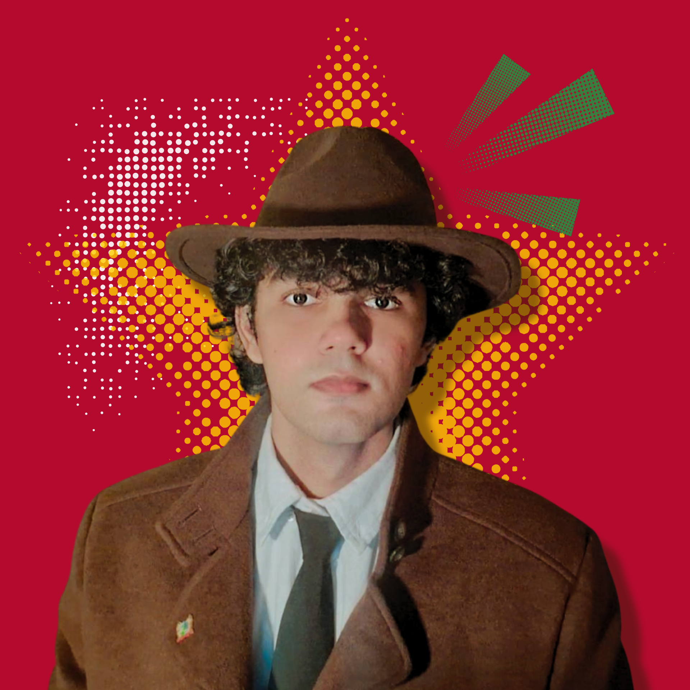

DE PERSOON ACHTER DE STUDIO
HEY DAAR.
IK BEN DE MAKER.
Een korte kennismaking met de persoon achter Twilight Dusk Studios. Binnenkort vertel ik hier meer over mezelf en het idee achter de studio.

OPRICHTER / TWILIGHT DUSK STUDIOSEEN KLEIN ACHTERGRONDVERHAAL / 001
WAAROM IK BEGON.
Dit is de plek voor mijn verhaal: de inspiratie achter Twilight Dusk Studios, de producten die ik maak of selecteer en wat ik met deze studio wil delen.
De tekst is voorlopig een invulvoorbeeld. Pas hem aan in about.html wanneer je klaar bent om jouw eigen verhaal te vertellen.
ONTDEK DE WEBSHOP ↗VAN MIJ VOOR JOU
BEDANKT DAT
JE ER BENT.
Elke bezoeker en elke bestelling betekent veel. Bedankt voor je steun aan Twilight Dusk Studios.